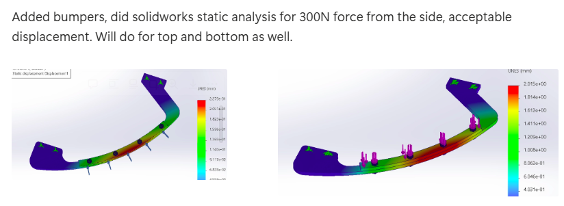

My Name is Evans Soh — currently an undergraduate at NUS as a Mechanical Engineering and Economics Double Degree Student.
This website serves as a central hub for Compilation of CVs and My projects.
(Updated CV to be added)
Proficient in CAD Software, mainly Solidworks, Fusion 360.
Able to code in Python, and knows C and C++ enough to be able to read code.
Can do simulation and CAD drafting relatively quickly. As an example, I have done bumpers for relevant robotics use and research before:

Most recent first, older posts later.
Was part of NUS Calibur as main team from AY24/25–25/26, mainly working on Standard Infantry Robots.
Of course these robots were not made alone, but with a team of people I greatly appreciate working with :)
Not added here as I do not want to get doxxed.